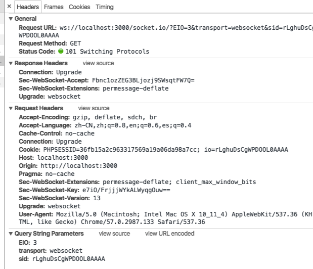

说一个现实场景（微信网页版）
分析微信这样处理的优缺点： 优点：实现起来简单 缺点：浪费带宽，服务器需要保留连接而占用一个 线程
作用：
允许服务器端与客户端进行全双工（full-duplex）的通信

客户端：
- “Connection: Upgrade”就表示浏览器通知服务器，如果可以，就升级到webSocket协议
- Upgrade:websocket 头信息表示将通信协议从HTTP/1.1转向该项所指定的协议
- Origin用于验证浏览器域名是否在服务器许可的范围内
- Sec-WebSocket-Key则是用于握手协议的密钥
服务端：
- “Connection: Upgrade”通知浏览器，需要改变协议
- 浏览器用"Sec-WebSocket-Accept"和浏览器请求带上的Sec-WebSocket-Key连接并验证是否是目标服务器进行的回应（具体怎么验证可能涉及到加密问题）。
http连接断开后服务器将不会记得之前请求了什么返回了什么，但是websocket发送请求之后不会断开连接。所以服务器收到请求的时候知道这个请求属于谁。
http只能是客户端主动请求服务端
websocket协议在第一次握手连接时，通过http协议告诉服务器“我要切换为ws连接”
如果服务器支持ws协议，则返回101
chrome devTool 分析
ws连接并没有中断
Frames表示客户端和服务器之间的数据传输历史记录
1-1 demo演示
多－1 demo演示
防攻击：
以sec开头的header浏览器脚本无法获取，脚本也不能设置，攻击者无法伪造websocket请求，所以本身有一定的防攻击性
CORS不适用于websocket协议，所以，也容易进行跨站攻击，但是websocket的第一次握手会传递origin，服务端需要做好origin校验(两个项目代码交叉演示)，不过origin头部可以被伪造，应该需要加上令牌验证之类的认证措施。
其它demo链接：